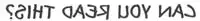
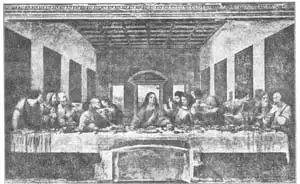
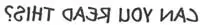

13
LEONARDO DA VINCI
列奥纳多·达·芬奇

PUT this line in front of a mirror and then you can read it quite easily.

That is what people found they had to do with notes written by a very great man named Leonardo da Vinci (Lay-o-nar’doe dah Vin’chee). It is not because he wrote from right to left across the paper, that we call him a very great man, though! It is because he knew how to do more things well than any one else in the whole world. Probably he wrote from right to left because he was left-handed.
Leonardo da Vinci lived during the Renaissance, in Italy. He was born some years before the painter Raphael, and died a year before Raphael died. Among the many and varied things Leonardo da Vinci did well was painting. Some people still think he was the best painter that has ever lived. And yet he was interested in doing so many other things besides painting, that he painted only a few pictures in his long life.
One of Leonardo’s paintings is in the Louvre, an art gallery in Paris. The picture is called “Mona Lisa” (Mo’nah Lee’sah). Some years ago this famous picture was stolen right from the wall of the Louvre and newspapers all over the world printed the story with just as big head-lines as if a great king had died or a big ship had been sunk at sea. Luckily, it was found finally and put back in the Louvre, though the real thieves were never caught.
The “Mona Lisa” is the picture of an Italian lady. On her face is a faint smile. If the artist had changed the painting the least bit, there might have been no smile there at all. It is a puzzling smile. Mona Lisa seems to be smiling at something that no one else knows anything about.
There are other things to notice besides the smile. Notice how solid the woman seems—not flat like a cardboard woman, but as if she were a real person. Leonardo could make her look real because he understood how to use dark and light, how to make the bright part fade into the shadows. He was the first painter to understand how to do this.
Next notice the background, the part of the picture behind the woman. It is a landscape, with a stream and hills and mountains. When you look at a real landscape, you know you can’t see things far away quite as clearly as things close to you. That is because of all the air between you and the things that are far away. Although you can’t see this air, you can understand that the more air you look through, the dimmer things seem. Leonardo da Vinci was a great enough painter to make the landscape look as if it really were far away. He was the first painter who understood how to do this, too.
Another painting by Leonardo is not in an art gallery, where it would he carefully taken care of, but is in a low, damp room in a monastery in Italy where it has been badly damaged by moisture. It is one of the world’s greatest paintings, but it will never be put in an art gallery, because Leonardo painted it directly on the wall.
The picture is known as “The Last Supper.” It shows Christ and the twelve Apostles seated at a long table. Leonardo chose to picture the moment when Christ has just said,“One of you will betray me!”
Can you not imagine how absolutely terrible to these Apostles would be the thought of betraying their beloved Master, whom they knew as the Son of God? Leonardo shows by their gestures, their hands, the expression of their faces, how each Apostle feels when he hears these words.
To show what men in a painting feel is not easy. A painter cannot, 60 Courtesy of. The University Prints of course, make the people in his pictures speak what they feel. If he wants to show their feelings, he must do it by showing how people look when they are thinking a certain thing. Leonardo visited deaf and dumb people, to learn how they showed their feelings when they were excited or happy or frightened or angry. This helped him make the people in his pictures show just the feelings he wanted them to— even if they could not speak.

No. 13-2 THE LAST SUPPER（《最后的晚餐》） DA VINCI（达·芬奇 作）
Gourtesy of The University Prints
Not many years after “The Last Supper” was painted, the paint began to come off the plaster of the wall. One reason for this was that Leonardo painted on the dry plaster. Michelangelo and other wall painters always had painted on the plaster when it was still fresh and damp. When they did this, the paint sank into the fresh plaster and couldn’t peel off unless the plaster came off, too. You remember I told you this kind of painting is called fresco, which is the Italian word for fresh. Leonardo was interested in trying new ways of painting, and so, unfortunately, he didn’t use the old-style fresco way for his “Last Supper.”
When the paint had flaked off in many places, other artists painted over the picture where they thought it needed touching up. After a time a great part of Leonardo’s painting was covered by the much poorer painting of these much poorer painters. Worst of all, the monks decided to cut a door in the wall. The top of the doorway was made right in the middle of the lower part of the painting, and of course the hammering to make a hole through the stone wall jarred off more of the paint.
Later, Napoleon led his armies into Italy, and some of his soldiers used the room of “The Last Supper” as a stable for their horses! They even amused themselves by throwing their boots at the painting to see if they could hit Judas Iscariot, the Apostle who betrayed Jesus.
So year by year this wonderful painting became more and more a ruin, until there was danger that it would be lost altogether. Finally, a wise Italian found a way of making what was left cling to the wall so it would not come off. Then he managed to take off all the paint put on by the other painters, so that now the picture is in better condition than it has been for hundreds of years.
We have only about three or four other paintings by the great Leonardo da Vinci. One that every one likes is called “The Virgin of the Rocks.” It shows the baby Jesus and His mother seated on the ground with the little Saint John and an angel. They seem to be in a place of caves and dark rocks. Through openings in the rocks we can see the bright blue of a waterfall and the green of plants.
Leonardo knew more about plants and flowers than any one else of his time. One of the paintings of a follower of his named Luini (Loo-ee’nee) is named for a flower. It shows a young woman holding a columbine and so this painting is called “The Columbine.” Luini’s women have the same kind of half-smile that Leonardo painted so well. Luini was a good painter, but not nearly so good as Leonardo da Vinci, the wonderful genius whom he imitated.
【中文阅读】
把下面这行字放到镜子前，那么你就能很容易读出来。

人们发现也只有这样做才能读懂一位伟大画家的笔记，他叫列奧纳多·达·芬奇。 那倒不是因为他能从右到左地写反字，我们才说他伟大。我们说他伟大，是因为他知道如何比世界上任何人多做事，做好事。至于他为什么要从右到左地写字，很可能是因为他是左撇子吧。
列奥纳多·达·芬奇生活在意大利文艺复兴时期。他比画家拉斐尔早出生几年，但比他早一年去世。列奥纳多·达·芬奇在所做的各样事情中最擅长的就是绘画。有人始终认为他是有史以来最好的画家。除了绘画，他还对许多其他事情感兴趣，所以他在漫长的一生中只画了几幅画。
在巴黎卢浮宫的一家美术馆里有一幅列奥纳多的画。这幅画名叫《蒙娜丽莎》。几年前，这幅名画直接从卢浮宫的墙上被卸下盗走。全世界的报纸将此事登载头版头条大肆报道，就好像在报道一位伟大的君王去世或一艘大船在海上沉没。幸运的是，这幅画最终被找到并送回卢浮宫。但真正的盗贼却一直没有抓到。
《蒙娜丽莎》画的是一位意大利贵妇。她脸上露着浅浅的微笑。如果画家对此画稍作修改，微笑可能早就没有了。那是一种让人捉摸不透的微笑。蒙娜丽莎仿佛对着某种只有她自己才知道的东西微笑。
除了那微笑，画中还有另外一些东西值得关注。你看画中的女人是多么具有立体感，简直就像一个真人，不像纸板上画的女人那么扁平。列奥纳多之所以能把她画得那么逼真，是因为他知道如何运用阴影和光线，知道怎样使明亮的部分渐渐融入阴影处。他是第一位懂得这样做的画家。
接下来要关注的是背景，也就是画上女人背后的部位。那是一派自然风光，有溪流、小丘和高山。当我们在某地看真实的自然风景时，我们知道我们无法像看近处的东西那样清晰地看到远处的事物。这都是因为人和远处事物之间的大气造成的。尽管看不见大气，但能明白，空气越多，透过它看到的事物就越模糊。列奥纳多·达·芬奇的确非常伟大，他能使景物看起来真的就像在远处一样。在这一点上，他也是第一位懂得这样做的画家。
列奥纳多的另外一幅画却没有放在美术馆里，而放在意大利一座修道院低矮潮湿的房间里，已经严重受潮受损了。而这幅画要是存放在美术馆里就可以得到细心的照看。它是世界上最优秀的绘画作品之一。它之所以不能送到美术馆去，是因为列奥纳多把它直接画在墙上了。
这幅画就是著名的《最后的晚餐》。画中基督和十二使徒坐在一张长桌前。列奥纳多选择了基督说“你们中间有一个人要卖我了”时的场景来作画的。
想想看，对于这些使徒来说，出卖他们深爱的主，也就是被他们所承认的上帝之子，该是多么可怕的想法吗？列奥纳多通过刻画使徒们的动作、手势和表情来展示他们每个人听到这句话时的感受。
要在画中表现人物的感受并非易事。画家自然不能让画中人讲说他们的内心感受。所以，如果画家要想表达人物内心的感受，他必须通过展示人物在思考某事时的表情来做到这一点。列奥纳多拜访了许多聋哑人，了解他们在兴奋、高兴、惊恐或者生气时是怎样表达他们的情绪。这对列奥纳多大有帮助，因为他在画画时，就能随心 所欲地表现出画中人物的内心情感，仿佛这些人物就是聋哑人。
《最后的晚餐》完成后没几年，颜料就开始从灰泥墙上脱落。其中一个原因是列奥纳多把画画在干燥的灰泥墙上。米开朗基罗和其他的壁画家们却总是在刚刷好还未干的灰泥墙上作画。这样，当他们绘画时，颜料就会渗透到湿润的灰泥中去，除非灰泥脱墙，否则画好的画绝对不会脱落。还记得我跟你说过这种画叫湿壁画吧。不过，列奥纳多喜欢尝试新的绘画方式，所以，遗憾的是他并没有使用湿壁画这种老方法来绘制《最后的晚餐》。
当颜料开始从各个部位脱落时，其他画家便在他们认为需要的地方加以润色。所以没过多久，列奥纳多这幅画的大部分画面就被这些蹩脚画家们的粗糙画面所覆盖了。最糟糕的是，修士们要从墙上开一扇门。门的顶端正好在画底部的正中央。毫无疑问，石墙钻孔时的锤锤打打震落了画面上更多的碎片。
后来，拿破仑率军进驻意大利，他的一些士兵把《最后的晚餐》所在的房间改成了马厩！他们甚至用靴子往画上砸，看看谁能击中那个背叛耶稣的使徒加略人犹大，以此来逗乐。
因此，年复一年，这幅名画被毁坏得越来越严重了，甚至面临完全被毁坏的威胁。最后，有个聪明的意大利人找到了一种方法，可以让剩下的画面永久地粘在墙上，再也不会脱落。于是，他设法将其他画家涂的颜料全部擦掉，所以现在这幅画要比它几百年前的状况还要好。
我们现在只拥有伟大的列奥纳多·达·芬奇的三四幅作品。其中一幅叫做《岩间圣母》，每个人都很喜欢。画上小耶稣和他母亲玛利亚坐在地上，旁边坐着小圣约翰和天使。他们好像在一个有许多深岩洞和黑色岩石的地方。在岩石的缝隙处，我们能看见鲜蓝的瀑布和翠绿的植物。
列奥纳多比他同时代的人更了解花草树木。他有个学徒，叫卢伊尼，以一种花命名画了一幅画。画中一位年轻女子怀抱一颗耧斗菜，所以这幅画就叫做《耧斗菜》。卢伊尼画中的女人带有列奥纳多擅长画的那种似是而非的笑容。卢伊尼是一位优秀的画家，但还是比不上老师列奥纳多·达·芬奇，因为列奥纳多·达·芬奇是一位了不起的天才。